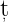
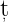
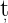
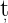
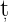
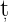
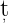
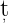
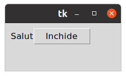
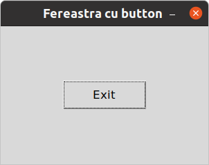

0.1 Python Tkiner
Tkinter este un modul Python pentru crearea interfe elor grafice(GUI)
elor grafice(GUI)  i este
inclus în toate distribu
i este
inclus în toate distribu iile standard Python. Acest modul oferă o interfaă
pentru setul de instrumente Tk i func
iile standard Python. Acest modul oferă o interfaă
pentru setul de instrumente Tk i func ionează pe modelul orientat obiect.
Setul de instrumente Tk este o colec
ionează pe modelul orientat obiect.
Setul de instrumente Tk este o colec ie multiplatformă de elemente de control
grafic, cunoscute sub numele de widget-uri, pentru construirea interfeelor
grafice.
ie multiplatformă de elemente de control
grafic, cunoscute sub numele de widget-uri, pentru construirea interfeelor
grafice.
Pentru verificarea versiunii Tcl/Tk în terminal introduce i:
i:
$ tclsh
% info patchlevel
8.6.10
Pentru a verifica instalarea corectă a modulului Tkinter în terminal introduce i comanda:
i comanda:
$ python3 -m tkinter
Această comanda deschide următoarea fereastră:

Acest modul oferă utilizatorilor Python o modalitate simplă de a crea
elemente grafice folosind widgeturile găsite în setul de instrumente Tk.
Widget-urile Tk pot fi folosite pentru a construi butoane, meniuri, câmpuri de
date etc. într-o aplica ie Python. Odată create, aceste elemente grafice pot fi
asociate sau pot interaciona cu caracteristici, func
ie Python. Odată create, aceste elemente grafice pot fi
asociate sau pot interaciona cu caracteristici, func ionalita
ionalita i, metode, date
sau chiar alte widgeturi.
i, metode, date
sau chiar alte widgeturi.
De exemplu, un widget de buton poate accepta clicuri de mouse  i poate fi,
de asemenea, programat pentru a efectua un fel de aciune, cum ar fi ie
i poate fi,
de asemenea, programat pentru a efectua un fel de aciune, cum ar fi ie irea
din aplicaie.
irea
din aplicaie.
Aceasta este un program Python cu Tkinter  i rezultatul după rularea
programului:
i rezultatul după rularea
programului:

0.2 Python tkinter.ttk
Vechile widget-uri clasice Tkinter le-a introdus în 1991. Cele mai noi widget-uri
tematice ttk au fost adăugate în 2007 cu Tk 8.5. Cele mai noi widget-uri tematice
ttk înlocuiesc multe (dar nu toate) widget-uri clasice. Există diferite moduri de a
importa modulul ttk. Dacă prefera i ca toate widget-urile i alte caracteristici
ale Tkinter
i ca toate widget-urile i alte caracteristici
ale Tkinter  i ttk să fie în spa
i ttk să fie în spa iul dvs. de nume global, utiliza
iul dvs. de nume global, utiliza i această formă
de import:
i această formă
de import:
from tkinter import *
from ttk import *
Este important să face i aceste două importuri în această ordine, astfel încât
toate tipurile de widget-uri de la ttk să înlocuiască widget-urile echivalente de la
Tkinter. De exemplu, toate widgeturile Button vor proveni de la ttk i nu de la
Tkinter. În aplica
i aceste două importuri în această ordine, astfel încât
toate tipurile de widget-uri de la ttk să înlocuiască widget-urile echivalente de la
Tkinter. De exemplu, toate widgeturile Button vor proveni de la ttk i nu de la
Tkinter. În aplica ii mai complexe, unde utiliza
ii mai complexe, unde utiliza i mai multe module importate,
poate îmbunătă
i mai multe module importate,
poate îmbunătă i foarte mult lizibilitatea codului dvs. dacă practica
i foarte mult lizibilitatea codului dvs. dacă practica i o igienă
sigură a spa
i o igienă
sigură a spa iului de nume: importa
iului de nume: importa i toate modulele dvs. folosind sintaxa
„import modulename”. Acest lucru necesită doar un pic mai mult de tastare, dar
are marele avantaj că pute
i toate modulele dvs. folosind sintaxa
„import modulename”. Acest lucru necesită doar un pic mai mult de tastare, dar
are marele avantaj că pute i privi o referin
i privi o referin ă la ceva
ă la ceva  i pute
i pute i spune de unde
a venit.
i spune de unde
a venit.
import ttk
După acest import, ttk.Label este constructorul widge-tului Label, ttk.Button
este un Button  i aa mai departe. Dacă trebuie să face
i aa mai departe. Dacă trebuie să face i referire la articole
din modulul Tkinter, acesta este disponibil sub numele de ttk.Tkinter. De
exemplu, codul de ancorare pentru „nord-est” este ttk.Tkinter.NE. În schimb,
putei importa Tkinter separat în acest fel:
i referire la articole
din modulul Tkinter, acesta este disponibil sub numele de ttk.Tkinter. De
exemplu, codul de ancorare pentru „nord-est” este ttk.Tkinter.NE. În schimb,
putei importa Tkinter separat în acest fel:
import Tkinter as tk
După această formă de import, codul pentru „nord-est” este tk.NE.
0.2.1 Button
Widget-ul Button reprezintă un element care poate fi apăsat (clik) în aplica ii.
De obicei, utiliza
ii.
De obicei, utiliza i un text sau o imagine pentru a afi
i un text sau o imagine pentru a afi a ac
a ac iunea care va fi
efectuată atunci când facei clic.
iunea care va fi
efectuată atunci când facei clic.
Butoanele pot afia text într-un singur font. Cu toate acestea, textul poate
cuprinde mai multe linii. În plus, pute i face unul dintre caracterele subliniate
pentru a marca o comandă rapidă de la tastatură.
i face unul dintre caracterele subliniate
pentru a marca o comandă rapidă de la tastatură.
Pentru a invoca automat o func ie sau o metodă a unei clase atunci când se
face clic pe buton, atribui
ie sau o metodă a unei clase atunci când se
face clic pe buton, atribui i op
i op iunea de comandă func
iunea de comandă func iei sau metodei.
Aceasta se numete legarea comenzii în Tkinter.
iei sau metodei.
Aceasta se numete legarea comenzii în Tkinter.
Pentru a crea un buton, utiliza i constructorul ttk.Button după cum
urmează:
i constructorul ttk.Button după cum
urmează:
buton = ttk.Button(container, **option)
Un buton are multe op iuni. Cu toate acestea, cele tipice sunt acestea:
iuni. Cu toate acestea, cele tipice sunt acestea:
buton = ttk.Button(container, text, command)
În această sintaxă:
* container este componenta părinte pe care plasa i butonul.
i butonul.
* text este eticheta butonului.
* command specifică o funcie de apel invers care va fi apelată automat
atunci când butonul a fost apăsat.…
Buton simplu

0.2.2 Checkbox
print(\Hello, World!")